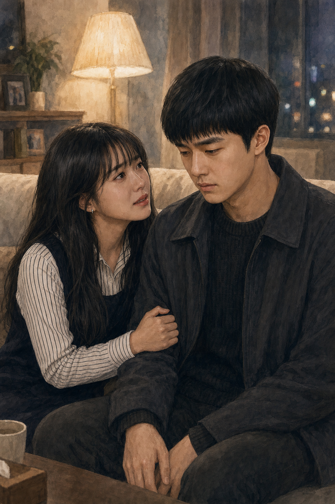

058. 두 달만
일요일 오전, 초연에게서는 여전히 아무 연락이 없었다.
용식은 눈을 뜨자마자 폴더폰부터 확인했다. 밤사이 온 문자는 없었다. 몇 번이나 문자를 썼다가 지웠다. '미안해'로 시작하면 변명처럼 보일 것 같았고, '이따 보자'로 시작하면 너무 아무렇지 않은 척하는 것 같았다. 결국 아무것도 보내지 않은 채 세수만 하고 차를 몰아 수원으로 향했다. 약속도 하지 않은 걸음이었다.
창밖으로 일요일 오전의 한산한 거리가 지나갔다. 교회 종소리가 멀리서 들렸다. 용식은 신호에 걸릴 때마다 백미러로 자기 얼굴을 확인했다. 어젯밤 제대로 못 잔 티가 눈 밑에 그대로 남아 있었다. 무슨 말부터 꺼내야 할지, 여전히 정리되지 않은 채였다.
초연의 집 앞에 도착해 벨을 눌렀다. 한참 만에 문이 열렸다. 초연의 눈이 붉게 부어 있었다. 밤새 운 흔적이 역력했다.
[김초연] "왜 왔어. 연락도 없이."
[김용식] "그냥 왔어. 얘기하고 싶어서."
초연은 잠시 그를 바라보다가 몸을 옆으로 비켜 들여보내 줬다. 거실에는 텔레비전이 낮은 볼륨으로 켜져 있었지만, 아무도 보고 있지 않았다.
두 사람은 소파에 나란히 앉았다. 한참 동안 아무 말도 오가지 않았다. 초연이 먼저 침묵을 깼다.
[김초연] "가지 마."
[김용식] "……"
[김초연] "그냥, 가지 말라고."

목소리가 떨렸다. 용식은 그녀의 손을 잡으려 했지만, 초연은 그 손을 뿌리치듯 밀어냈다.
[김초연] "두 달이야. 두 달 동안 나 혼자 여기서 어떻게 지내."
[김용식] "매일 연락할게. 진짜야."
[김초연] "그게 무슨 소용이야, 여기 없는데."
초연의 눈에서 눈물이 떨어졌다. 그녀는 손등으로 대충 훔치고는 다시 그를 봤다.
[김초연] "그럼 나도 데려가."
[김용식] "……초연아."
[김초연] "왜, 안 돼? 나도 같이 가면 되잖아. 어학연수 그런 거, 나도 알아보면 되고."
[김용식] "너희 부모님이 허락하시겠어? 두 달을, 그것도 남자랑 같이."
그 말에 초연은 입을 다물었다. 알고 있었다. 자신의 부모님이 하룻밤 외박조차 쉽게 허락하지 않는 분들이라는 걸. 대학 엠티도 몇 번이나 실랑이를 벌인 끝에 겨우 다녀온 처지였다. 하물며 남자와 함께 두 달씩 해외로 간다는 건 상상조차 하기 어려운 일이었다.
[김초연] "……알아. 안 되는 거 아는데."
[김용식] "미안해."
[김초연] "그래도 그냥 한번 말해 본 거야. 혹시나 해서. 진짜 될 리가 없다는 것도 알아."
초연은 무릎을 끌어안으며 고개를 숙였다. 어깨가 잘게 떨리고 있었다. 거실 창문 밖으로 지나가는 자동차 소리가 유난히 크게 들렸다.
용식은 그녀 옆으로 조금 더 다가가 앉았다. 손을 뻗어 어깨를 감쌌다. 이번에는 초연도 밀어내지 않았다.
[김용식] "나도 가기 싫어. 진짜야. 근데 이게 나한테 필요한 시간인 것 같아서."
[김초연] "필요한 시간이 왜 하필 지금이야."
[김용식] "나도 몰라. 그냥, 지금이 아니면 안 될 것 같았어."
초연은 그의 어깨에 얼굴을 묻었다. 한참을 그렇게 있었다. 거실 시계 초침 소리만 조용히 째깍거렸다.
[김초연] "다른 여자 만나지 마. 거기서."
[김용식] "안 만나."
[김초연] "일본어 학원 사람도, 그 언니도 데려가지 마."
용식은 순간 심장이 덜컥 내려앉았다.
[김용식] "그 사람은 절대 안 가."
[김초연] "진짜지?"
[김용식] "어, 진짜야."
거짓말이 그렇게 쉽게 나올 줄, 용식 스스로도 몰랐다. 목소리는 흔들리지 않았지만 손끝에는 땀이 배어 나왔다. 초연은 그 말을 듣고서야 조금 안심한 듯 고개를 끄덕였다.
한참의 침묵 끝에, 초연이 몸을 일으켜 눈물을 닦았다. 표정이 조금 전보다 차분해져 있었다. 텔레비전에서는 여전히 낮은 볼륨으로 일요일 예능 프로그램이 흘러나오고 있었다.
[김초연] "가."
[김용식] "정말 괜찮겠어?"
[김초연] "안 괜찮아도 어쩔 수 없잖아."
그녀는 억지로 웃어 보였다. 그 웃음이 오히려 더 마음 아프게 느껴졌다.
[김초연] "방학 두 달만... 잘 있어야 돼. 몸 조심하고, 이상한 데 다니지 말고."
[김용식] "어."
[김초연] "돌아오면, 그때 다시 얘기하자. 우리 앞으로 어떻게 할지."
그 말에는 이전과 다른 무게가 실려 있었다. 그저 잘 다녀오라는 인사가 아니라, 이 두 달을 버텨 낸 뒤에야 뭔가가 결정된다는 뜻처럼 들렸다. 용식은 그 말을 마음 깊이 새겨 넣듯 조용히 고개를 끄덕였다.
용식은 그녀를 꼭 안았다. 초연도 그 품에 몸을 맡겼다. 서로의 온기만이 지금 이 순간을 지탱하고 있었다. 창밖으로 오후 햇살이 조금씩 기울고 있었다.
집을 나서는 길, 용식은 골목 끝에서 뒤를 돌아봤다. 초연은 창가에 서서 그를 내려다보고 있었다. 손을 흔들지도, 웃지도 않았다. 그저 가만히 바라보고 있을 뿐이었다. 그 모습이 오래도록 눈에 남을 것 같았다.
차에 올라 시동을 걸면서, 용식은 방금 자신이 뱉은 거짓말을 다시 떠올렸다. 한서윤은 안 간다고. 그 말이 앞으로 어떤 파장을 만들지, 지금은 짐작조차 하기 싫었다.
집으로 돌아오는 길, 라디오에서 오후 가요 프로그램이 흘러나왔다. 용식은 볼륨을 줄이고 창문을 조금 내렸다. 눅눅한 초여름 바람이 차 안으로 들어왔다. 오늘 초연이 보여 준 얼굴, 그 눈물과 억지웃음이 계속 머릿속을 맴돌았다.
집에 도착해 방에 들어와서도 쉽게 마음이 가라앉지 않았다. 어학연수를 결심했을 때는 단순히 새로운 경험, 일본어 실력, 그리고 오래전부터 품어 온 막연한 동경 정도로만 생각했었다. 그런데 막상 초연의 눈물을 보고 나니, 이 선택이 두 사람 사이에 남길 무게가 이제야 실감 났다.
책상 앞에 앉아 달력을 펼쳤다. 6월 15일까지 남은 날짜를 손가락으로 짚어 보며, 용식은 그 사이 해야 할 일들을 하나씩 떠올렸다. 짐 정리, 비자 서류, 그리고 아직 말하지 못한 한서윤과의 대화까지. 해야 할 일은 많았지만, 마음은 여전히 무겁게 가라앉아 있었다.
창밖이 완전히 어두워질 때까지, 용식은 달력 앞을 떠나지 못했다. 6월 15일이라는 숫자가 오늘따라 유난히 낯설게 느껴졌다.